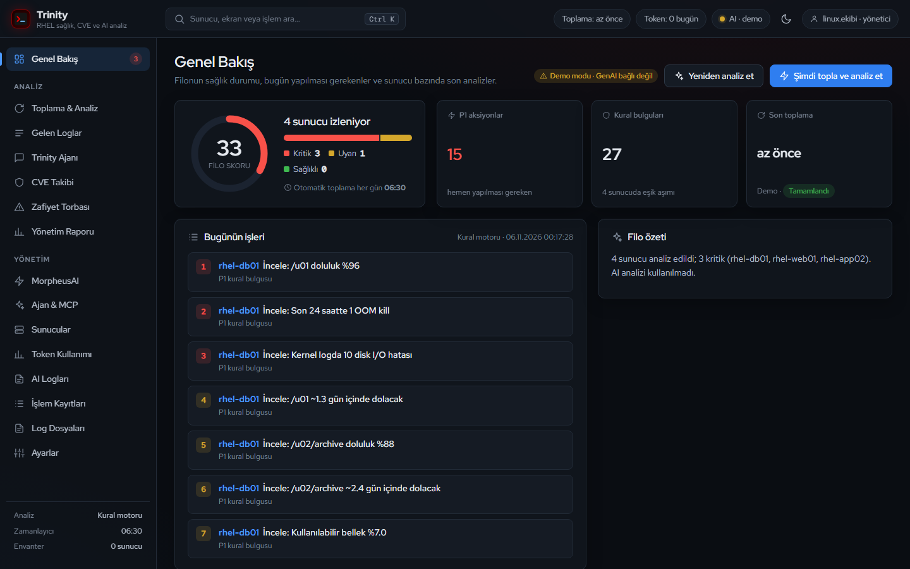
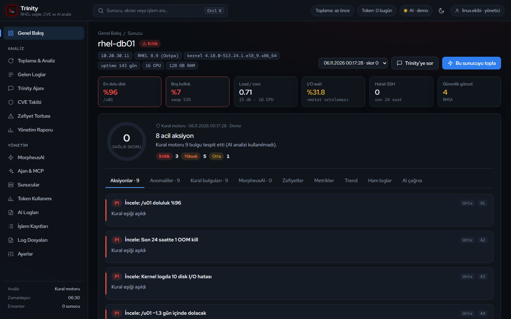
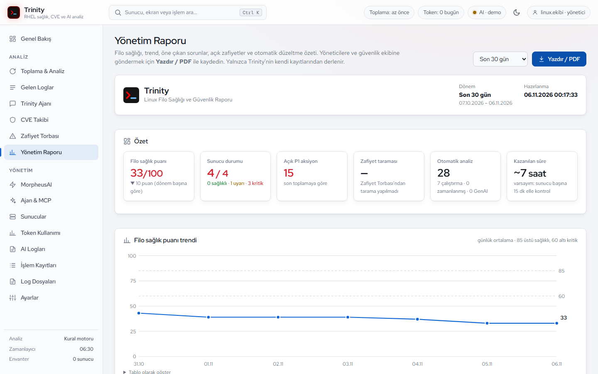

Trinity, Red Hat Enterprise Linux sunucularınızı ajan kurmadan SSH ile tarar, logları ve metrikleri kurumsal GenAI ile yorumlar, Satellite'tan açık zafiyetleri çıkarır ve sorunları onayınızla çalışan Ansible playbook'larına dönüştürür.
/u01 dolmak üzere ve son 24 saatte OOM kill görüldü; iki uygulama sunucusunda kernel I/O hataları artıyor.
Zamanlayıcı tüm etkin sunuculara SSH ile bağlanır: disk, bellek, yük, journal, kernel, servisler, SSH denemeleri.
Kural motoru eşikleri değerlendirir, GenAI anomalileri yorumlar ve her sunucuya 0-100 sağlık puanı verir.
Satellite'tan sunucu başına açık RHSA ve CVE'ler, yamanın hazır olup olmadığı ve SLA durumu.
Teams, Slack veya e-posta ile özet: kritik sunucular, P1 aksiyonlar, onay bekleyen playbook'lar.
MorpheusAI'nin kurumsal standartlara göre ürettiği playbook'u inceleyip tek tıkla onaylarsınız.
AAP önce dry-run (check) çalıştırır; sonuç temizse sunucuya uygulanır. Her adım kayıt altında.
Filo skoru, kritik ve uyarıdaki sunucular, bugün yapılması gerekenler. Her aksiyonun yanında hangi komutla doğrulanacağı ve nasıl düzeltileceği yazar.

Her bulgu kanıtıyla gelir: hangi log satırı, hangi metrik, hangi eşik. Trinity Ajanı'na doğal dille sorarsınız; gerekirse sunucuda salt-okunur tanı komutu çalıştırıp cevap verir.

Son 7, 30 veya 90 gün: filo sağlık puanı ve trendi, en riskli sunucular, öne çıkan sorunlar, açık zafiyetler ve otomatik düzeltme sayıları. A4 olarak PDF'e kaydedilir.

Güvenlik ekibinin ilettiği CVE numarasını girin: Satellite'tan kapatan errata ve etkilenen sunucular gelir, Satellite'ın göremediği sunucular SSH ile doğrulanır.
Önem derecesi, yamanın content view'de hazır olup olmadığı, kaç gündür açık olduğu ve SLA aşımı. Errata'nın içeriği, Red Hat'in çözümü ve sunucuya özel komutlar.
Bulgu kurumsal Ansible standartlarına uygun bir playbook'a dönüşür. Siz onaylamadan AAP'de hiçbir şey çalışmaz; önce dry-run, sonra uygulama.
Günlük özet, kritik durum, onay bekleyen playbook ve zafiyet uyarısı. Her olay ayrı açılıp kapatılır; adresler gizli tutulur.
Trinity ve MorpheusAI araç çağrılarıyla birbirine danışır. Trinity'nin araçları Claude Code gibi MCP istemcilerinden de kullanılabilir.
Token servisi ve chat/completions adresleri arayüzden girilir. Günlük token limitleri, kullanıcı bazında kullanım ve maskelenmiş AI logları.
Zafiyet torbası her errata'yı Red Hat'in yayın tarihinden itibaren sayar. Süreyi aşan her kayıt raporda ve bildirimde ayrıca işaretlenir. Süreler kurum politikasına göre değiştirilebilir.
| Önem | Kapatma süresi | Örnek errata |
|---|---|---|
| Critical | 15 gün | RHSA-2024:4312 · openssh |
| Important | 30 gün | kernel security update |
| Moderate | 90 gün | curl security update |
| Low | 180 gün | — |
hedef sunucuya kurulan ajan veya paket. Bağlantı mevcut SSH anahtarıyla yapılır.
onaysız değişiklik. Toplama ve tanı salt-okunurdur; düzeltme yalnızca bir kişinin onayıyla çalışır.
ek Python paketi. Sunucu tarafı yalnızca standart kütüphaneyle çalışır; pip install gerekmez.
Durum değiştiren her işlem kim, ne zaman, hangi IP'den bilgisiyle İşlem Kayıtları'na yazılır.
data/ altında; saklama süresi ayarlanır.Elle sunucu sunucu gezmek yerine önceliklendirilmiş iş listesi, kanıtı ve komutu. Tekrarlayan düzeltmeler onaylı playbook'a dönüşür.
Hangi sunucu etkileniyor, yama hazır mı, SLA aşıldı mı. Sunucu bazında zafiyet torbası ve CSV dışa aktarma.
Filo sağlığı trendi, açık kritik konular, otomasyonun ne kadar iş yaptığı. Toplantıya PDF olarak gelir.
# merkez sunucuda (RHEL 8/9, root) # git clone <repo> /opt/unixai-os && cd /opt/unixai-os # bash deploy/install.sh ✓ Python 3.9+ ✓ ssh anahtarı ✓ .env ✓ systemd ✓ firewalld → http://merkez-sunucu:3000 # hedef sunucularda yalnızca açık anahtar # bash target-setup.sh "ssh-rsa AAAA…" <merkez_sunucu_ip> # güncelleme # git pull && systemctl restart unixai-os